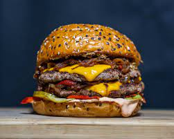

Ingrédients(pour 1 personne)
- Emmental
- 1 oignon
- 1 tomate
- 1 steak
- Mayo
- Ketchup
- Pain
- Cornichons
Préparation
- Tranchez de fines lamelles d'emmental afin de recouvrir la partie inférieure de votre pain à burger. Mettez
ensuite au four sur le mode grill le temps de faire fondre le fromage.
- Coupez l'oignon de manière à obtenir de fines et grandes lamelles. Coupez la tomate en grandes tranches
également. Coupez 2 à 3 grandes feuilles de salade en lamelles fines et longues.
- Hachez en tout petits morceaux les cornichons et mélangez-les à la mayonnaise préalablement préparée.
- Mettez au four la partie supérieure de votre pain à burger.
- Faites ensuite cuire à votre convenance votre steak haché dans une poêle avec du beurre ou de l'huile ou
utilisez un grill. Assaisonnez généreusement en sel et poivre.
- Sortez ensuite les deux parties de votre pain à burger. Disposez sur la partie avec le fromage fondu votre
steak haché sur lequel vous allez étaler votre mayonnaise. Déposez ensuite une à deux grandes tranches de
tomate puis la salade verte.
- Sur la partie supérieure de votre pain, étaler du ketchup de manière à le recouvrir complètement, puis
disposez vos lamelles d'oignons.
- Refermez. Bon appétit !